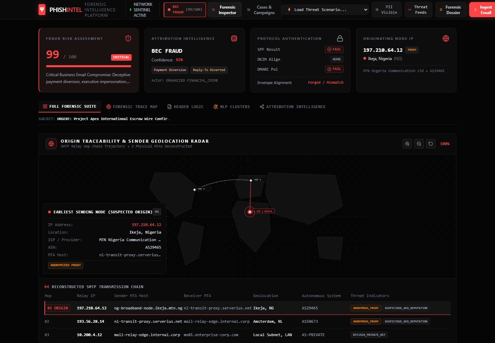

Understand the problem.
Who is this for, and what do they need help with?
A HUMAN PERSPECTIVE ON TECHNOLOGY
I build digital experiences
and tools that make technology
feel a little more human.
I’m Shivam Pandey. I enjoy connecting engineering, thoughtful design, and the real people who use what we make.
I’m currently building ThreatDetection—a project shaped by curiosity about digital safety and how technology can make complex things easier to understand.
A LITTLE MORE ABOUT ME ↗One project I’m proud to share.
A starting point for what comes next.

A forensic intelligence platform
for investigating suspicious email.
Here’s how I approach a project: first understand the problem, then plan a clear solution, then build and improve it.
Who is this for, and what do they need help with?
Choose the right features and make the experience easy to follow.
Turn the plan into a working product and keep refining the details.
ThreatDetection presents a forensic view of suspicious email activity, bringing related signals and evidence together in one place.
OPEN THE LIVE PROJECT ↗The path keeps unfolding.
Here’s what I know so far.
Learning how ideas become working things, one experiment at a time.
Exploring a more approachable experience for understanding digital threats.
Open to ambitious ideas, thoughtful teams, and meaningful work.
EDUCATION & EXPERIENCE DETAILS CAN BE ADDED WHEN YOU’RE READY.
Technologies and computer science topics I’m building experience with.
Projects, ideas, collaboration—if something here resonates, I’d love to hear from you.
BHOPAL, INDIA · OPEN TO THE WORLD